Part 1 · Identity manual
Spotify Mix
A DJ-mixing feature that lives inside Spotify’s dark Encore language. The identity job is restraint: extend Encore with exactly three new ideas — Camelot key badges, transitions that live between songs, and a warning that carries its own fix — and change nothing else.
Principles
- Inside Encore, not beside it. Every screen must be mistakable for Spotify. New patterns extend existing ones (chips, sheets, pills); they never introduce a new visual language.
- Color is information. On the near-black stage, color only ever means something: green = action or positive state, a key badge’s hue = musical harmony, ember = a rough transition. Decorative color is banned.
- Every warning carries its fix. A problem is never flagged without the remedy in the same element.
- Preview before commit. Anything the system decides — reorder, transition, bridge song — can be heard or reviewed before it sticks.
Mark & entry point
The feature has no logo. Its mark is the Mix glyph — the two-slider icon
on the playlist Mix pill — plus the ✦ sparkle reserved for machine-made suggestions.
The sparkle may only appear where the system did the work; never on a manual action.
Spotify’s own logo rules apply untouched — Mix never places, recolors, or locks up the Spotify logo.
The engaged tool wears the liquid-metal rim — a 2.7dp stroke running #5A5A5A → #ACACAD → white so the top and bottom edges catch light, over a fill that darkens toward both ends. It is the only shine in the system, and it means “the machine is holding this tool”: Mix while the sheet is open, Mix + Smart reorder once the reorder has run.
Color treatment
- One green, and it is
#1CD05E— the in-app Encore green sampled from the final screens. It is not the marketing green#1ED760; that value never appears in product UI. - Green is used for: primary CTAs, Save, selected filter pills, the play disc, playing state, progress, downloaded/shuffle dots, text links. Nothing else.
- Ink on green is always black (10.2:1). White on green fails at 2.05:1 and is forbidden.
- Key badges are data, not decoration. Their hues are fixed per Camelot number and may never be reused elsewhere.
- Ember is the only warning treatment. No red fills, no standalone yellow triangles; the red
#BC1E1E✗ appears only in the legend screen.
The Camelot key legend
Each song carries its key as a 9pt black-ink badge. Hue follows the Camelot wheel number, so keys that harmonize sit in neighboring hues and matching keys match exactly — the color does the DJ theory. A and B of the same number share a family (10A is the lighter sibling of 10B). The in-product legend screen (“Making mixing easy”) teaches this with live components, not illustrations.
Reading pairs, as the legend teaches them
Rule for unmeasured keys: keep the neighbor-hue ordering around the wheel, pastel enough for ≥ 7:1 against black ink.
Imagery & voice
- Album art is the only imagery. 44×44dp, radius 6, never cropped, never filtered.
- Ambient color is derived from art, never invented. The playlist header gradient (
#279EFE → #006EC9, collapsing to#00447C) and the now-playing bar tint (#142239) are extractions from the current artwork. Nothing else ever picks up art color. - Voice: short, first-plural, playful only at moments of delight — “Let’s Mix!”, “Your Mix is ready!”. Warnings are lowercase and factual: “hard blend”. Illustration is monochrome line-art (the party popper), never color emoji.
Do / don’t
Part 2 · Design system
Color tokens
Every hex sampled 1:1 from the final lossless PNG exports (2026-08-28, 360×783 = 1 px per dp).
Surfaces
Elevation is a lightness step, never a shadow — see Elevation.
Ink
Green & semantic
Lines
Typography
The screens are set in Montserrat — confirmed against the exports letterform by letterform (looptail g, flagged 1, curved t), with every size solved by matching rendered text widths against the PNGs — the scale is compact: titles 13, chips 11, meta 10.5. This page loads Montserrat from Google Fonts, so the samples below are the real thing. It stands in for Spotify’s proprietary Circular; a production hand-off maps the same scale onto Circular. SemiBold carries the hierarchy; color separates primary from secondary. No italics anywhere.
Spacing & radius
4pt grid, 12dp screen margin (measured on every screen). All standalone actionables are pills; chips inside a set get flatter corners the more options they hold.
Measured sizes
| Element | Height | Radius |
|---|---|---|
| CTA pill | 46 | pill |
| Full-width pill | 45 | pill |
| Search pill | 44 | pill |
| Preset chip | 40 | 8 |
| Segmented option / preview | 40 | 10 / 12 |
| Add-button circle | 40 ⌀ | — |
| Transition chip | 38 | pill |
| Filter pill | 34 | pill |
| Warning pill | 35 | pill |
| Tool pill (playlist header) | 30 | pill |
| bpm + key pair chip | 48 | 12 · 1px #414141 |
| Album art | 44 × 44 | 6 |
| Key badge | 14 | 4 |
| Progress bar | 4 | 2 |
| Action card | 56–64 | 14 |
| Coach toast | content | 16 |
| Sheet handle | 56 × 4 | 2 |
| Bottom sheet top corners | — | 24 |
Touch: nothing interactive below 30 visual; pad to ≥ 44 effective.
Iconography
- Stroke weight is tiered, not uniform: 1.75dp in the action row (download, share), 1.5dp for nav & search, 1.25dp inside pills and rows (chevrons, mixer, burger, sort, pencil, plus), 1dp for micro-glyphs (note+, sliders, ×), and hairlines below that (⊖ 0.75, popper 0.5). Round caps on directional strokes; burger and sort rails are square-cut.
- The sparkle is one large four-point star with a small companion star at its upper right — filled, black on green/white fills, white on dark pills. It ships at 10.5×13 in chips and 17×21 on the CTA, always the same drawing.
- The play disc is chrome in a 6dp green ring (54⌀ overall): an angular-gradient steel face with a 1.75dp lit rim, white glyph. While playing it collapses to the flat 42⌀
green/actiondisc with the black pause glyph. - Green on an icon means state, not style: downloaded ↓, smart-shuffle dot, headphones-connected.
- The ⚠ triangle in the ember pill is outlined, in
warn/inklike its text — never filled, never yellow. - Advanced-control rows carry a 3×14 channel tick — volume steel
#28556C, EQ olive (#FFE500family, dimmed). Channel colors appear nowhere else.
Elevation
No shadows. Elevation = surface lightness + geometry. One deliberate inversion:
transition chips are darker than their surface (#1E1E1E on #2B2B2B) because they
belong to the seam between songs, not to either row. Sheets add a 40% black scrim.
Motion
Recommended values — the pattern is observed in the recording, the durations are the spec for build.
| Moment | Spec |
|---|---|
| Bottom sheet | slide up 300ms decelerate · scrim fades 200ms |
| Chip select / invert | 150ms color swap, no movement |
| Sheet → toast (“Your Mix is ready!”) | content crossfades in place, 200ms |
| Preview progress | linear, real-time with audio |
| Reduce motion | swap slides for fades, keep durations |
Interaction states
Selected — neutral sets invert, action sets go green
Engaged tool & focus
Disabled / spent
Fill #AEB2B5, ink #323232 (6.0:1 — still readable, clearly asleep). Shown while the list is being edited manually.
Playing & sibling dim
Playing: title turns green, an equalizer glyph replaces the index. Expanded focus: sibling rows sit under a 20% black scrim with ink at 55%.
Warning
Patterns
- Progressive disclosure: pill row → sheet → toast → full editor. Every step is skippable (“Edit Manually”, “Review”).
- The seam owns the transition: everything about how two songs meet — the chip, the warning, the bridge insertion point — renders between the rows, centered, never inside a row.
- Bordered pair: only the two songs being mixed get the bordered bpm+key chip; list rows stack the same meta unboxed.
- Preview-before-commit: Intro/Outro segmented preview with the 4dp progress bar; the waveform’s play disc previews the blend itself.
- Teach in context: the coach toast links to the legend screen, and the legend explains with live components, not illustrations.
The seam, assembled — at true 360dp metrics
Core components
Rebuilt at true 360dp metrics against the exports — the phone-width stages below are 1:1 with the screens.
Top bar
Song rows — list variant, pair variant, edit variant
Preset chips
Filter pills
Buttons
Segmented preview + progress
Bars picker (modal sheet segments)
Choose how long your tracks should transition for.
Action cards
Search
Coach toast
Match key colors or find similar bpm for a smoother blend.
How does this actually work?Bottom sheet
Let’s Mix!
We’ll organize your playlist for you - or you can do it manually.
Waveform editor
Outgoing bars: green/action at 65%. Incoming: gray/waveform. The play disc in the editor wears a green ring. The crossfade curve is a 1px green stroke against a 1px white one; bar-lines mark the n bars window.
Platforms
One spec, three targets. dp / pt / px map 1:1 off the 360-wide frame. The bottom sheet is
Android ModalBottomSheet, an iOS detent sheet, and a web dialog at ≤ 480 wide.
The bottom nav and status bar stay native; everything above them follows this document.
Montserrat ships on all three (Google Fonts); a production hand-off inside Spotify would
swap to Circular at the same scale.
Accessibility
| Pair | Ratio |
|---|---|
| white on base | 18.7 |
| bpm value on base | 14.3 |
| badge ink (worst measured badge) | 9.1 |
| black on green | 10.2 |
| green on base | 9.1 |
| secondary on base | 8.8 |
| white on control | 7.2 |
| disabled ink on disabled fill | 6.0 |
| coral on ember | 5.8 |
| tertiary on base / on full sheet | 5.4 / 4.1 |
Key color never carries meaning alone: the badge always contains the key text, the legend pairs color with ✓/✗ glyphs, and bpm is written out beside every badge. White on green (2.05) and the legend’s ✗ red are the two known-fail pairs — the first is banned, the second is always doubled by the glyph shape.
Screens
The final exported frames these tokens were sampled from.
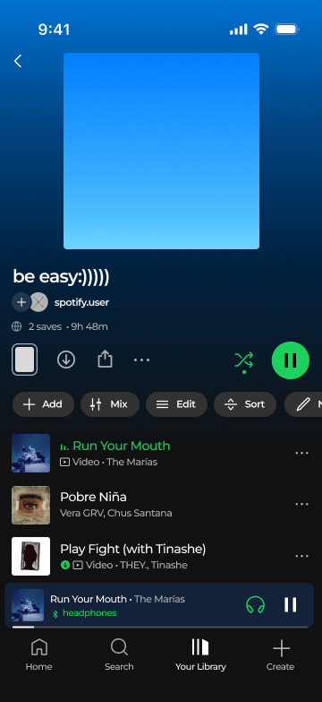
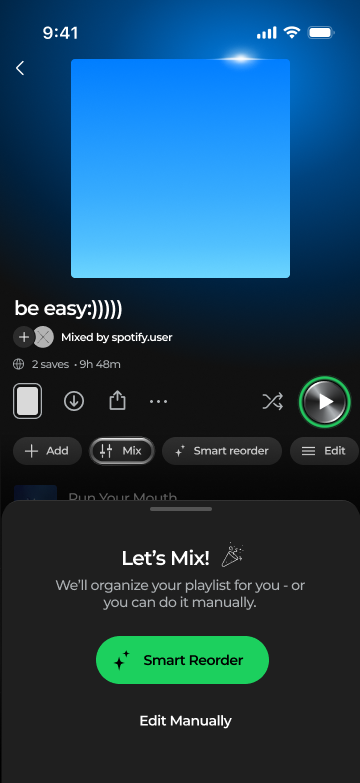
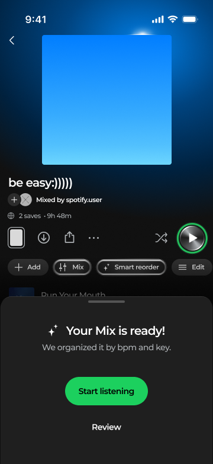
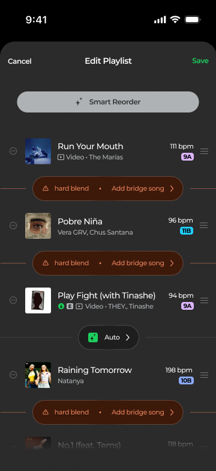
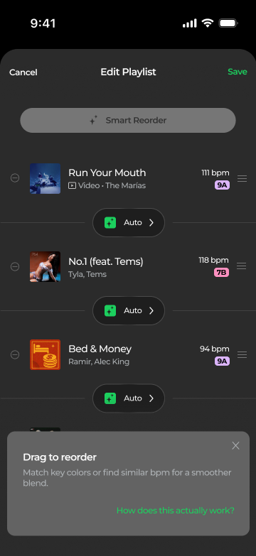
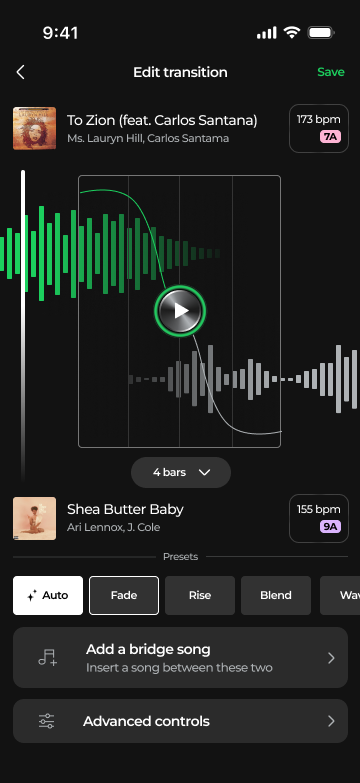
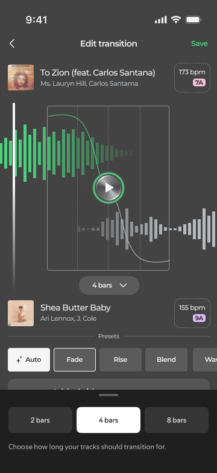
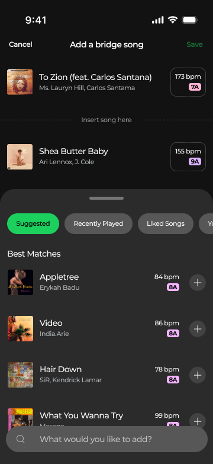
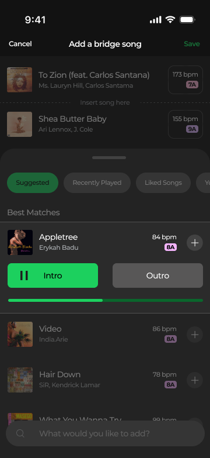
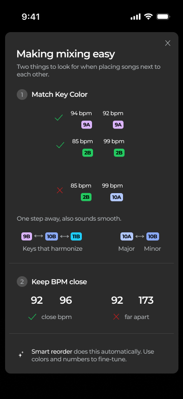
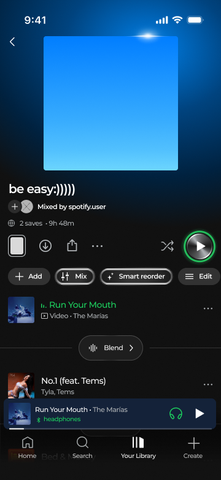
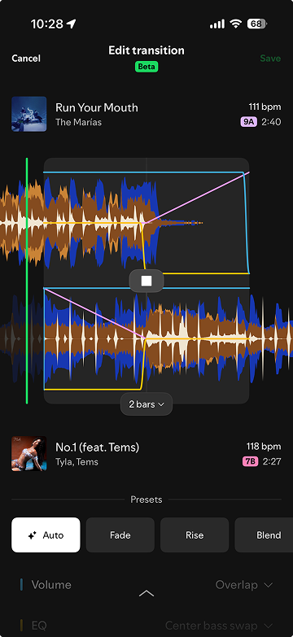
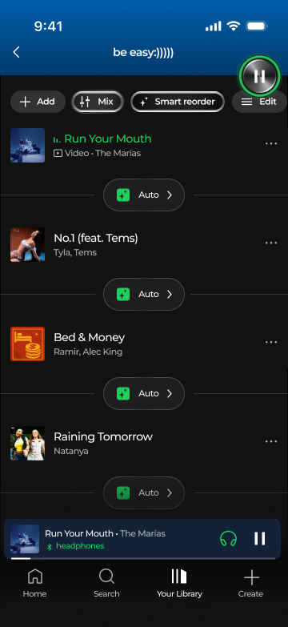
Provenance
Colors sampled pixel-for-pixel (pngjs) and geometry measured by color-run scanning from the
2026-08-28 lossless exports in Project 1 Spotify/ (360×783 = 1px per dp), copied to
assets/case-studies/spotify/final/. The typeface was identified as Montserrat by a
letterform lineup against the exports; this page loads it from Google Fonts so every component
here renders in the real face at true dp metrics. Icons are SVG tracings of the glyphs in the
screens. Motion durations are recommendations; the pattern is observed in the recording.
The legacy 6b. Advanced Controls frame still carries old-style visuals (including
#1ED760) and was excluded from sampling except its channel-color curves.
The full written rules live in spotify.md.